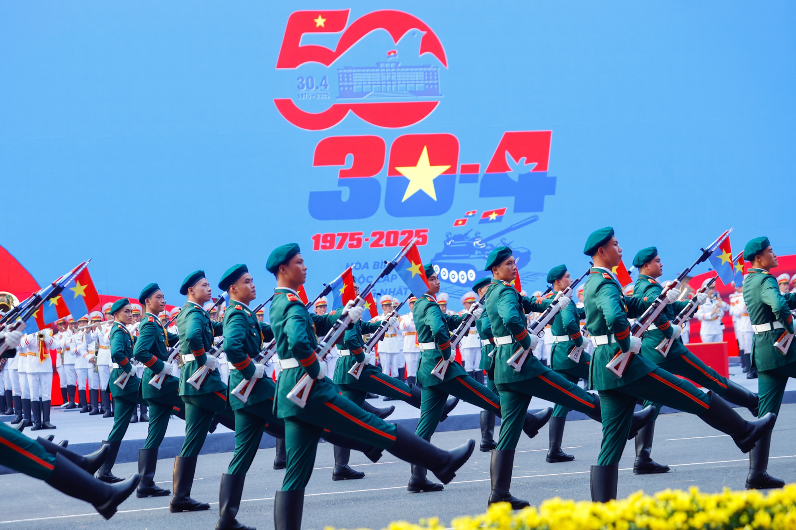
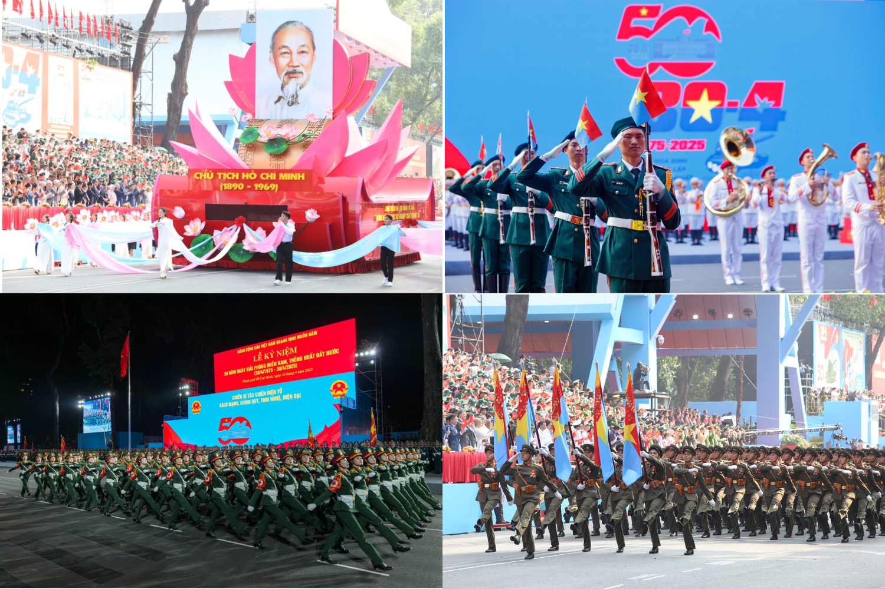
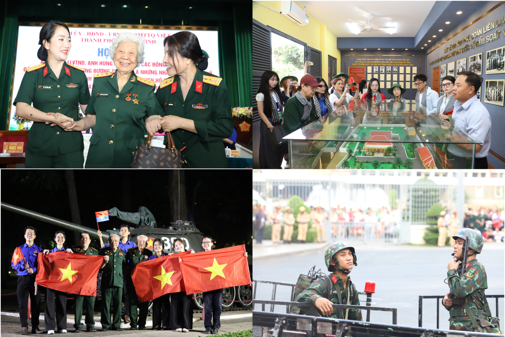

Ngày giải phóng Miền Nam Thống Nhất đất nước

Ngày lễ trọng đại 30 tháng 4
Ngày lễ trọng đại 30 tháng 4
Năm 2025 đánh dấu tròn 50 năm ngày 30/4/1975, một sự kiện lịch sử trọng đại của dân tộc Việt Nam. Nửa thế kỷ đã trôi qua kể từ ngày chiến tranh kết thúc, đất nước hoàn toàn thống nhất, mở ra thời kỳ hòa bình và phát triển.
Dịp kỷ niệm 50 năm ngày 30/4 là cơ hội để toàn dân cùng ôn lại chặng đường lịch sử đã qua, tưởng nhớ những hy sinh to lớn của các thế hệ cha anh, đồng thời nhìn lại những đổi thay mạnh mẽ của đất nước sau năm mươi năm thống nhất.
Ngày 30/4 không chỉ là dấu mốc ghi trong sách sử, mà còn là biểu tượng của hòa bình, của sự đoàn tụ dân tộc và trách nhiệm gìn giữ thành quả mà cha ông đã đánh đổi bằng cả máu xương.
Sáng ngày 30/4/2025, tại TP. Hồ Chí Minh, lễ diễu binh – diễu hành trọng thể đã được tổ chức nhân kỷ niệm 50 năm Ngày Giải phóng miền Nam, thống nhất đất nước.
Buổi lễ chính thức diễn ra từ 06 giờ 30 phút tại trục đường Lê Duẩn, Quận 1, phía trước Hội trường Thống Nhất – nơi gắn liền với sự kiện lịch sử ngày 30/4/1975.
Lễ diễu binh có sự tham gia của hơn 13.000 người, bao gồm các lực lượng Quân đội nhân dân, Công an nhân dân, dân quân tự vệ cùng các khối quần chúng đại diện cho các tầng lớp nhân dân.
Buổi lễ diễn ra trong không khí trang nghiêm, hào hùng với cờ đỏ sao vàng rực rỡ, tiếng nhạc hùng tráng và bước đi đều đặn của các khối diễu binh, thu hút đông đảo người dân và du khách theo dõi trực tiếp và qua truyền hình.
Lãnh đạo Đảng và Nhà nước cùng các đại biểu quốc tế tham dự buổi lễ, khẳng định ý nghĩa to lớn của Đại thắng mùa Xuân năm 1975 và nhấn mạnh tinh thần đoàn kết toàn dân tộc trong công cuộc xây dựng và bảo vệ Tổ quốc.
Sự kiện kỷ niệm 50 năm ngày 30/4 không chỉ là dịp để tri ân quá khứ, mà còn là lời nhắc nhở thế hệ hôm nay và mai sau về giá trị của hòa bình, độc lập và trách nhiệm giữ gìn, phát huy những thành quả của dân tộc.